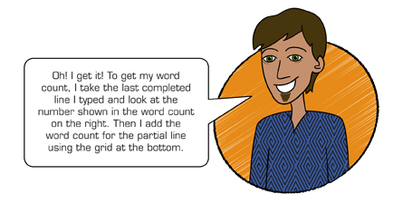

Project 1: Learning the Alphanumeric and Symbol Keys
Training Room 1: Calculating Your Speed
Counting Words per Minute (WPM)
In keyboarding a “word” consists of five keystrokes. A keystroke is any letter, number, or symbol key you strike, as well as the space bar and Enter key.
To calculate your speed per minute, count the number of total keystrokes used and divide by 5 to find the number of total words typed. Then divide the total word count by the number of minutes you were typing. If your word processing software has a word count, then this process is easy. If, for example, you typed for a total of 2 minutes and typed 250 keystrokes, you would first divide 250 by 5 for a total of 50 words. Then, since you typed for 2 minutes, you would divide 50 by 2 to get 25 words per minute.
For most of the exercises in this course, each line will have a number to the right of the line. This number shows how many words are in the line, saving you from having to do the calculations to find the number of words in the line. Along the bottom of the text, there are number grids showing the word count for each line. If you do not complete a line of typing, you can use the numbers along the bottom of the text to find the number of words in the partial line.
Example
....1....2....3....4....5....6....7....8
There are a total of 30 words in this passage. If you typed as far as the word go in the last sentence, you would have typed 24 words plus another 2 words from the partial line for a total of 26 words. If you typed this in 1 minute, your speed would be 26 words per minute, or 26 wpm. If you typed it in 2 minutes, your speed would be 26 ÷ 2 = 13 wpm. If you typed the first two lines in 1 minute, your speed would be 16 wpm.

Take a minute to try typing the previous example using a timing device (timer) or have a friend or family member time you. Don't worry about your errors at this time. Remember to use Courier font and to hit the Enter key at the end of each line so that your text looks like the passage you are typing. Remember, the goal of this course is to reach a minimum speed of 30 wpm. How did you do?
When calculating your speed on the numeric keypad, your speed will be recorded in keystrokes per minute (kpm) rather than in words per minute (wpm). If you struck 120 keys in 1 minute, record your speed as 120 kpm. If you struck 120 keys in 2 minutes, record your speed as 120 ÷ 2 = 60 kpm.